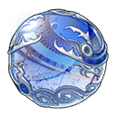

추천 광추
은하철도의 밤
적 수만큼 공격력 · 격파 후 피해
효과 자세히
필드 적 1기당 공격력 +9%, 최대 +45%. 적 약점 격파 시 피해 +30% 1턴.
동트기 전
치피 +36% · 추가 공격 +48%
효과 자세히
스킬·필살기 피해 +18%. 사용 후 몽신 획득 → 다음 추가 공격 피해 +48%.
멈추지 않는 연산
공격력 +12% · 광역 공격 가속
효과 자세히
명중 적 1기당 공격력 +8%, 최대 +40%. 3기 이상 명중 시 속도 +16% 1턴.
천재들의 휴식
공격력 +32% · 처치 후 치피 +48%
효과 자세히
자신이 적을 처치하면 치피 버프 3턴.
느낌 있는 아침 식사 루틴
피해 +24% · 처치당 공격력 +8%
효과 자세히
공격력 최대 3스택 +24%.
추천 유물
재와 뼈마저 불사르는 대공 4 · 주인 없는 황폐한 별 츠가냐 2
- 머리
 주옵션HP부옵션치명타 확률 · 치명타 피해 · 공격력% · 속도
주옵션HP부옵션치명타 확률 · 치명타 피해 · 공격력% · 속도 - 손
 주옵션공격력부옵션치명타 확률 · 치명타 피해 · 공격력% · 속도
주옵션공격력부옵션치명타 확률 · 치명타 피해 · 공격력% · 속도 - 몸통
 주옵션치명타 확률 / 치명타 피해부옵션치명타 확률 (주옵션 제외) · 치명타 피해 (주옵션 제외) · 공격력% · 속도
주옵션치명타 확률 / 치명타 피해부옵션치명타 확률 (주옵션 제외) · 치명타 피해 (주옵션 제외) · 공격력% · 속도 - 다리
 주옵션공격력% / 속도부옵션치명타 확률 · 치명타 피해 · 공격력% (주옵션 제외) · 속도 (주옵션 제외)
주옵션공격력% / 속도부옵션치명타 확률 · 치명타 피해 · 공격력% (주옵션 제외) · 속도 (주옵션 제외) - 구체 주옵션화염 속성 피해 / 공격력%부옵션치명타 확률 · 치명타 피해 · 공격력% (주옵션 제외) · 속도
- 매듭
 주옵션공격력%부옵션치명타 확률 · 치명타 피해 · 속도
주옵션공격력%부옵션치명타 확률 · 치명타 피해 · 속도
이 조합을 추천하는 이유
대공 추가 공격 피해 +20% · 타격으로 공격력 중첩. 츠가냐 적 처치당 치피 +4%(최대 40%).
재와 뼈마저 불사르는 대공 4 · 질주하는 늑대의 도람 왕조 2
- 머리
주옵션HP부옵션치명타 확률 · 치명타 피해 · 공격력% · 속도
- 손
주옵션공격력부옵션치명타 확률 · 치명타 피해 · 공격력% · 속도
- 몸통
주옵션치명타 확률 / 치명타 피해부옵션치명타 확률 (주옵션 제외) · 치명타 피해 (주옵션 제외) · 공격력% · 속도
- 다리
주옵션공격력% / 속도부옵션치명타 확률 · 치명타 피해 · 공격력% (주옵션 제외) · 속도 (주옵션 제외)
- 구체

주옵션화염 속성 피해 / 공격력%부옵션치명타 확률 · 치명타 피해 · 공격력% (주옵션 제외) · 속도 - 매듭
 주옵션공격력%부옵션치명타 확률 · 치명타 피해 · 속도
주옵션공격력%부옵션치명타 확률 · 치명타 피해 · 속도
이 조합을 추천하는 이유
동료 추가 공격이 도람을 예열 → 5스택 추가 공격 피해 +25% · 치피 +25%.
곤충 재앙을 잠재우는 철기군 4 · 겁화 연등의 연마궁 2
- 머리
 주옵션HP부옵션격파 특수효과 · 속도
주옵션HP부옵션격파 특수효과 · 속도 - 손
 주옵션공격력부옵션격파 특수효과 · 속도
주옵션공격력부옵션격파 특수효과 · 속도 - 몸통 주옵션HP% / 공격력%부옵션격파 특수효과 · 속도
- 다리
 주옵션속도부옵션격파 특수효과
주옵션속도부옵션격파 특수효과 - 구체
 주옵션HP% / 공격력%부옵션격파 특수효과 · 속도
주옵션HP% / 공격력%부옵션격파 특수효과 · 속도 - 매듭
 주옵션격파 특수효과부옵션속도
주옵션격파 특수효과부옵션속도
이 조합을 추천하는 이유
철기군은 전투 격특 250%에서 슈퍼 격파 피해의 추가 방어력 무시를 발동합니다. 연마궁은 화염 약점 타격 후 격특 +40%.
이 정도면 잘 키웠다
선택한 세팅 기준 · —는 확인된 수치 없음
- 허구 이야기
- 종결 명함·전광
츠가냐 치명타 피해 중첩과 추가 공격을 활용합니다.
| 스탯 | 추천 스탯 | 준종결 | 종결 |
|---|---|---|---|
| 공격력 | 3300[1]공격력 신발·화염 피해 구체·공격력 매듭. | — | 3300 |
| 치명타 확률 | 85%[2]행적 치명타 확률 15% 참고. | — | 85% |
| 치명타 피해 | 110% | — | 130% |
세팅 기준·출처
종결은 명함·전용 광추·대공·츠가냐 기준입니다. 공개 가이드에서 이 세팅의 준종결 수치를 확인하지 못했습니다.
- 추가 공격 파티
추가 공격 동료로 도람을 예열합니다.
| 스탯 | 추천 스탯 | 준종결 | 종결 |
|---|---|---|---|
| 공격력 | 3300[1]공격력 신발·화염 피해 구체·공격력 매듭. | — | — |
| 치명타 확률 | 85%[2]행적 치명타 확률 15% 참고. | — | — |
| 치명타 피해 | 110% | — | — |
세팅 기준·출처
공개 가이드에서 이 세팅의 준종결 또는 종결 수치를 확인하지 못했습니다.
- 조화가 침묵한 후
- 준종결 격특 전투 중
치명타 대신 속도와 격파 특수효과를 올립니다.
| 스탯 | 추천 스탯 | 준종결 | 종결 |
|---|---|---|---|
| 속도 | 133.4+ | — | — |
| 격파 특수효과 | 200% | 전투 250%[1]자체 계산 · 철기군 4세트가 슈퍼 격파 피해의 방어력을 추가로 15% 무시하는 발동점입니다. 원본 시트에도 전투 내 목표로 명시됩니다.자체 계산 | — |
세팅 기준·출처
시트 장비는 「조화가 침묵한 후」입니다. 이 세팅의 별도 종결 수치는 확인하지 못했습니다.
스탯 조건과 각주
- 격파 특수효과 · 준종결 자체 계산 · 철기군 4세트가 슈퍼 격파 피해의 방어력을 추가로 15% 무시하는 발동점입니다. 원본 시트에도 전투 내 목표로 명시됩니다. ↑
성혼과 추천 돌파
명함으로 격파 연쇄 가능. 4돌은 히메코가 스킬로 직접 격파할 때 충전 1pt 추가.
1추가 공격 → 속도 +20%추천
기세 몰이 발동 후 2턴.
2적 HP ≤ 50% → 피해 +15%
체력이 낮은 적에 대한 피해 증가.
3전투 스킬 +2 · 일반 공격 +1
스킬·일반 공격 레벨 상한 각각 15·10.
4스킬로 직접 격파 → 충전 +1추천
히메코의 전투 스킬로 격파한 경우만 추가 충전.
5필살기·특성 +2
필살기·특성 레벨 상한 각각 15.
6필살기 추가 2회 타격
임의의 적에게 각각 기존 배율의 40% 화염 피해.
추천 파티


기본 운영과 행적
약점 격파를 연쇄시키기
동료와 적 약점을 격파 → 충전 3pt가 차면 광역 추가 공격.
- 정예 적 격파 → 충전 3pt. 화염 약점을 상대할 때 화염 딜러나 격파 효율 지원 편성.
행적 육성 순서
전투 스킬 → 필살기 → 특성 → 일반 공격
- 추가 공격 위주 허구 이야기에서는 특성도 먼저 투자.